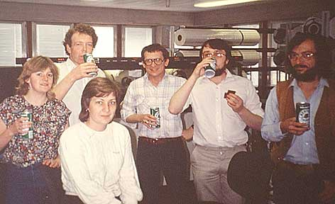
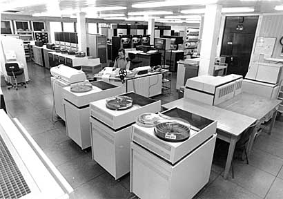

Loading
Location
Avon Universities Computing Centre, Bristol, England
Consortium of the University of Bristol and the University of Bath
First Installed
1979
Configuration
3 L68, 16 MSU0451 (in 1983)
[Jonathan Marten] The configuration in August 1979, according to SWIM (South West Information Manual) document "Multics Equipment List", was:
- Bristol:
- Level 68 DPS-2 twin processors with cache memory.
- One and a half million words [of main memory, presumably] on three SCUs.
- One Input/Output Multiplexer [British sic].
- Dual mass storage processors, each with dual channels controlling eight 200Mbyte disc drives, giving 1250M characters of storage space online.
- One Magnetic Tape Processor with three drives, all drives nine track operating at 800bpi or 1600bpi.
- One Unit Record Processor with one line printer (1600lpm) and a card reader (1050cpm).
- Two Datanets to support the interactive terminals. A third Datanet for network communications is to be installed in September 1979.
- Bath:
- Level 6/43 with 64K words of main memory.
- Two 400lpm line printers and one 300cpm card reader with controllers.
AUCC
[Paul Smee] In those days [mid 1970s], the government gave each university funds to completely replace their computing equipment every 7 years, plus upgrade funding halfway through each cycle. Bristol and Bath came up for replacement at the same time (both had ICL System 4s). Prof Mike Rogers at Bristol liked Multics. Someone (probably him) initiated the idea that, rather than each upgrading separately as had happened in past, the two unis could pool their upgrade money and get something better. They agreed to do that, and went for a Multics system, which was (just) affordable if they pooled their grants.
[Paul Smee] Bristol and Bath were sharing a machine, which would be physically located in Bristol since Bristol had the larger machine room (and the larger money allocation). If memory serves, Bristol owned 5/7 of the machine, and Bath owned 2/7. (That's certainly close, if not precise.) Neither site completely trusted the other, so an autonomous body, Avon Universities Computing Centre, was created to run the machine, and to ensure that each site got their fair share. (The government keeps redesigning political boundaries over here, but at the time both Bristol and Bath were in the county of Avon, which now no longer exists.) AUCC (who originally hired me) appears to have managed to keep both the partners happy. Godfrey Lance was our director.
[Paul Smee] SWURCC (SouthWest Universities Regional Computing Centre) was another independent organisation, the hub of SWUCN (SouthWest Universities Computing Network). This network interconnected the University of Bristol, U of Bath, Exeter U, University College Cardiff, and UWIST (University of Wales Institute of Science and Technology). Initially this was a homogeneous network, all sites having ICL System 4 machines of various sizes.
[Paul Smee] But, Bath and Bristol each also had their own Computing Services. These dealt with things like the local terminal rooms, user support, local help desks, etc. AUCC didn't deal directly with 'normal' users as a general rule, though we provided next-level support to Bristol and Bath support staff, in much the same way as HIS SiteSAs provided next-again-level support to AUCC.
The Sale
[Neil Aldred] Having just taken a trip down memory lane reading the various emails on the subject of AUCC its about time we put a salesman's perspective on this.
[Neil Aldred] The original concept of bringing Multics to Europe was made possible by UK product marketing manager Peter Harding-Jones (one of Dave Matthews team). I was a large systems salesman in the SW of England and picked up the Bristol and Bath University requirement. They wanted an interactive system capable of supporting I believe 100 and 40 concurrent users respectively. Level 66 GCOS at the time had no street-cred in the academic sector, and the Mini Level 6 was very early days. I reviewed the requirement with PHJ and he suggested Multics, but they only had enough budget for one system and secondly Multics was not offered in the UK.
[Neil Aldred] This started an 18 month sales campaign. PHJ obtained permission to bid Multics and we jointly went to bat persuading Bristol and Bath politicians that a single system could be administered as two independent systems guaranteeing a minimum percentage of resource to each university. Bristol liked the idea because they were to house the system; Bath were less enamored. It took a visit by the great Harry Quackenboss one evening to a Bristol IT freaks house with an audience of enthusiastic evaluators and IT hacks to convince everyone that Multics was just unique. He logged on to Phoenix System M and (with permission) re-configured CP's, memory, disk capacity, resource priorities in and out at random and boy did customer service suffer; but the point was made and he had the audience eating out of his hand.
[Neil Aldred] All that was left for me was to steer the financial, political and governmental procurement process to success.
[Neil Aldred] The AUCC evaluation committee included Prof Mike Rogers, Dr Hiliary Muirhead, Prof Basil Zaharov (on secondment from ULCC) Kit Powell, Alex Nichol, and Jim Robinson. This team visited the US and PHJ and I took them to MIT, Phoenix and USL. It was on the drive from New Orleans to Lafayette that the infamous Louisiana State Trooper Story occurred.
[Neil Aldred] The system was installed by Warren Johnson and at some point Mike Auerbach (couldn't spell it then), both super guys who saved my bacon on several occasions. I was delighted to see Don Mengel in Kit's email photo, another top notch technician who represented Multics in the UK so well. Also the impressive Ron Riedesel took an active support/marketing role and this same team rolled on to sell and install Cardiff University, Brunel University and later, with Brian Deuchar, RAE.
[Dave Vinograd] I helped install the kit - I was always on the look out for UK time so Mandy could see her folks. At one time we swapped homes with Allan ? so we had a nice place (read not a hotel room) to stay. Had my first taste of scrumpy during that visit.
[Neil Aldred] Those were the days.....no one knew what the hell was going on.
[Ron Riedesel] (Ron sent me a faded, undated clipping, probably from an internal Honeywell newsletter, that says)
FIRST MULTICS SYSTEM IN EUROPE. Universities of Bristol and Bath (UK) ordered Level 68/DPS valued at $4 million. To be installed at Bristol later this year.
Senior Sales Executive Neil Aldred, DPD Southern Branch Manager Graham Rowley, achieved order as result of seven-month sales campaign in competition with all other major manufacturers including DEC, Univac, IBM, CDC, ICL. New system will replace ICL System 4s (like Spectra) currently installed at the two universities.
Closing stages involved benchmark with IBM, CDC to connect 210 simultaneous under defined workloads. Peter Harding-Jomes, recently appointed manager of UK Multics Office, with assistance from Phoenix Benchmark services, completed benchmark with splendid results in three weeks.
Reference visits to MIT, University of Southwestern Louisiana were followed by presentations at Multics Development Center in Cambridge, MA. Multics Marketing Group in Phoenix. Harry Quackenboss (Multics Marketing) contributed throughout the campaign.
System comprises Level 68/DPS Level 2, 1.5M words of memory, two dual-channel mass storage processors with eight disk drives: three magnetic tape drives; 1050-cpm card reader; 1600-lpm printer; two DATANET front end processors, Level 6 remote job entry. Third DATANET for network (the rest of the clipping is cut off).
Honeywell Folks
Site Analysts: Warren Johnson, Stan Johnson, Robert Moffitt.
Development: Dave Vinograd, Jim Farrell, Alan Chambers
Avon Folks
AUCC: Godfrey Lance, Kit Powell, Paul Smee, Neil Davies, Robert Armstrong
Bath: Dave Gordon, Robin Sibson (Prof of Statistics), Alex Nichol, Douglas G. D. Clark, Dave Cunningham, Dennis Davis, Bob Yardley, Mukhtiar Gill
Bristol: Mike Rogers, Hilary Muirhead, Basil Zaharov, Dave M. Fisher, John Baker, Alan Chambers
SWURCC: Martyn Thomas, Jeff Rees, Paul Rouse, Richard Wendland, David Jenkins
David Corney, James Petts, Adrian Whatley

[Kit Powell] This picture shows the team that did one of the Multics release installations at AUCC. My recollection is that we would take the whole system for the weekend, do a complete backup in Saturday and the build in Sunday. The picture was taken on Sunday when we had finished. Neil's wife Sally provided the cake, I brought the beer. From L to R: Hilary Cook, me (relieved), Shane Cornish (seated), Don Mengel (HIS), Neil Davies, Paul Smee.
Physical Facilities
[Paul Smee] They were nice, more than large enough, air-conditioned machine room. HIS support staff were in a Portakabin (temporary office accommodation) out back. The most interesting feature of the machine room was the spiral staircase, which was the primary access between the machine room and the user area downstairs. It is truly boring carrying piles of printout down a spiral staircase. (Said staircase, did, however, win some sort of architectural award.)
Notable developments
Algol 68
[Martyn Thomas] I was never employed by AUCC, I joined SWURCC in December 1975 to lead the compilers and utilities team, and left in 1983 as Deputy Director and Systems Manager.
[Martyn Thomas] SWURCC was the regional computer centre, based on the Bath University campus but serving the more demanding users from Bath, Bristol, Cardiff, Exeter and UWIST. We ran an ICL 2980, which had little software at first. Our users had been using Algol W on their ICL System 4 university services, but they asked SWURCC to provide Algol 68 instead. I located a possible project, based on the Algol 68RS front end from the Royal Signals and Radar Establishment at Malvern, with a code generator being written by two staff at Oxford University Computing Services. I persuaded ICL that they would pay for the staff to turn this into a real product, which they agreed to do so long as it had ICL "look and feel" and they could market it as an ICL product. So I ran the project, using staff at SWURCC, Malvern and Oxford. It was a great success.
[Martyn Thomas] When AUCC came along, they asked for a Multics version of the compiler. By this time, I had a team of five or six people at SWURCC who were wholly funded on commercial software development money, and they had some spare capacity, so I agreed we would write an Algol 68 compiler for AUCC. Jeff Rees ran the team, with Paul Rouse, Richard Wendland, David Jenkins and possibly one or two others (memory fails). It had some novel characteristics (for example, the garbage collector relied on the unusual structure of Multics addresses to recognise references, instead of maintaining a reference map of memory, and was extremely fast). Richard Wendland is able to go into far more detail than I could.
[Martyn Thomas] In the early 1980s, political pressure forced me to choose between making the commercially funded staff redundant (our success was seen as a threat by the local computer centre directors at several of our six customer universities!) or moving the team wholly out into industry, resigning, and setting up a software house. I chose the latter, assisted by David Bean who had been the operating systems team leader at SWURCC and was by 1982 the Development Manager at Logica VTS in Swindon. Together we founded Praxis in 1983, and most of the commercial staff from SWURCC transferred to Praxis. We continued to support the Multics Algol 68 compiler (free, as I recall) until the last Multics site stopped using it.
Communications
[Paul Smee] Alan Williams did an initial BlueBook file transfer protocol (BlueBook FTP) under contract to HIS, and I took that over when he left. I also did the RedBook job transfer and management protocol (JTMP). Both were attempts to anticipate ISO protocols, and both were essentially wiped out by TCP/IP.
[Paul Smee] We were also involved in the other coloured books, but I forget which was which. Included email, terminal access, name resolution (Neil Davies' baby - think DNS, but more powerful and so less simple and less easy to maintain), and some others. Of course Alan Chambers (and maybe a couple others) had been seconded to HIS earlier on, to do some of the more fundamental, lower level, network protocols; AlanC spent some time at CISL even before the machine was delivered over here.
Anecdotes
[Warren Johnson] I arrived in Bristol in September, 1978 (after fleeing Puerto Rico). The computer center (or centre) was being built at the University of Bristol. It was a large room in an existing building; nothing special. The Honeywell "office" for the new center was a Porta-Cabin outside the computer room. I can't remember the exact date the machine showed up, but it was cold outside so I expect it was late 1978, maybe early 1979.
[Warren Johnson] I believe Bristol and Bath consolidated into a single center for financial reasons. They were partners as both had representatives on the Avon board, but Bristol may have had a greater percentage of members based on size.
[David Corney] I was an undergraduate at Bristol University from September 1978 to June 1981 and I used Multics a lot from my second year in 1979. I have a vague memory of Multics actually being installed at the very end of my first academic year but only being accessible to a very few computer centre staff - which would be something like May 1979.
[David Corney] Come the start of my second year in October 1979 we were given accounts which were limited to the FAST subsystem - in which we promptly wrote FORTRAN programs to call the full command processor to give us "real" access :-)
[David Corney] During that year I rewrote the FAST subsystem itself to allow it to execute any command from the command line. This was then used as a replacement system by the next year's undergraduate numerical analysis course - the university having long given up trying to limit undergraduates to a specific command set but still needing a simple environment for undergraduates to write FORTRAN programs.

[Robert Armstrong] This picture shows the AUCC machine room circa 1979 with me apparently at the helm of the good ship Multics. Click for a larger view.
[Robert Armstrong] I was based at the University of Bristol as the AUCC Information Officer from the arrival of Multics in 1979 until its departure in 1988. Apart from managing local online help information and user documentation my other joy was to produce an occasional newsletter "AUCC News" which apparently had fans all over the UK and even as far afield as Calgary, USL, the USGS at Reston and the White House.
[Robert Armstrong] The prospect of the imminent arrival of an IBM mainframe to "replace" Multics did not fill me with joy so I moved to the University of Bath where I headed the newly created NISS (National Information for Software and Services). NISS was a national computer-based information service set up to help staff from U.K. higher education institutions find information on the national academic computer network (JANET) - in those long-lost days before the WWW.
[Paul Smee] There is at least one story wrapped around the time when I (as SysAdmin) executed a delete ** command while I was (unexpectedly) still in >sss or >unb or some such. (I'd mistyped a cwd, typed the delete command ahead, and the cwd error didn't clear user_input. I don't know whether it indicates my quick wit, the robustness of Multics, or the relative slowness of directory munging in those days, but I realised what was happening, and managed to get a BREAK in and processed, before everything was gone. In fact, as luck would have it, there was enough left to allow a relatively clean restore from backups. Sigh.) There's a similar one when a user who had slipped in through a security oversight did a dl to the password file, when he'd intended da.
[David Corney] I remember the time when a friend of mine, who had been exploring a security oversight, turned up at my flat at around 2 o'clock in the morning to tell how he had mistyped da as dl on the password file. He left himself logged in as a sysadmin username which he had "borrowed" (if he'd logged it out he'd never have been able to log in again now the password file no longer existed.) We started with a conversation along the lines of me pointing out that, "a" and "l" are at opposite ends of the keyboard! And he replying that, he knew that and he didn't know how he'd managed to mistype it either! We then spent several hours trying to work out how he could put the file back before anyone came in to work but couldn't come up with anything. So he went in, in the morning, to confess.
[Paul Smee] The security oversight was a story in itself. Our most junior sysadmin had constructed a mechanism using one of message segs or mailboxes, forget which, whereby he, from a non-privileged login, could send commands to a privileged process monitoring the ms/mbx, which would then execute them as his SysAdmin self. The segment being used was created by the monitoring process as it started up, and the default acl for newly created ones was (essentially, this was ages ago) access only for the owner, none for *.*.*.
[Paul Smee] But, one of the later releases changed that, so the default ACL then gave *.*.* some (enough) rights. Our undergrad noticed this before our young SysAdmin did.
[Paul Smee] Moral? Don't rely on defaults; you want something to be some way, you explicitly make it that way. :-)
[Dave Vinograd] On a later visit learned that the site was not security aware as they had not changed the default Volume Dumper password. They did after I logged in and sent a message to one of the site SAs.
[Dave Gordon] Another example of the truism that nearly all security flaws are caused by human rather than computer weaknesses: one of the Multics administrator manuals gave an example of how to create a new account. The example used the new user's initials as their initial password, and *didn't* show how to force change of password on first login. After reading this, it didn't take certain of my friends long to discover that, yes, some (professors!) accounts had indeed been set up with their initials as their passwords, AND they hadn't been changed, even many months after the accounts were created!
[Dave Gordon] Said professors, while not having SysAdmin access, were nonetheless project administrators, with the power to allocate resources, and to create further user accounts within their own projects. So certain departments acquired a number of "phantom" students, with extra CPU time and/or storage quotas.
[Dave Gordon] Then there was the matter of the "anonymous access" facility ...
[Dave Vinograd] Bath/Bristol was connected to a X.25 network (based on what were called the Rainbow books) via a self constructed Level6 FEP.
[Jim Farrell] I worked on the UK X25 project with the University of Bristol and Bath. I was responsible for the X25 Connection Manager (Listener service) and some I/O changes for the control of the X25 FEP.
[Dave Gordon] I was an undergraduate during September 1978 to June 1982, with Multics becoming available at the start of my second year -- until then we had been using punched cards to submit WATFOR ;-(jobs on the old ICL systems, so interactive terminals were a great step forward, even though they were "glass ttys", with the cursor stuck on the bottom line :-/
[Dave Gordon] IIRC, the initial config was 2 CPUs and 0.75 Mwords of memory; this was supposed to support 100 users, but in my experience performance degraded pretty fast once there were more than ~60, to the extent that compiling a PL/I program got pretty painful.
[Dave Gordon] Over the next 3 years, the system was gradually upgraded to 3 CPUs and 2(?) Mwords of memory, which was a great improvement, and really could support 100 users.
[Dave Gordon] Other aspects of the installation that I remember being issues (or at least being blamed :-) were the Honeywell PADs used for the Bath<->Bristol link, which were eventually replaced by a PDP-11(/70?) that was a great deal more reliable, and also allowed the terminals to be upgraded from 300 to 1200 baud!
[Dave Gordon] And the air conditioning ... I seem to remember that in summer, there would be intermittent crashes said to be due to overheating, and on one occasion the system had to be brought down because the aircon was leaking into the computer room!
[Dave Gordon] [This may of course not have been true; being a remote site, all sorts of misinformation could spread around the Bath user community :-( Better check with staff rather than users for the real story ...]
[Adrian Whatley] I was a student user at the AUCC (Avon) site from 1983-6. Multics was the first system I used after cutting my teeth on 6502 based micros, mainly the Commodore PET, at age 14. I was supposed to be studying Chemistry, but I spent many long nights trying to hack Multics and reading page after page of, what's the terminology, info segments?
[Adrian Whatley] I also snuck on to the physicists' FORTRAN course, and did whatever other computing stuff I could, including some student project which needed to crunch some statistics from a massive survey. To do this, I got a second user account, and had to learn how to submit SPSS jobs from the Multics system to some neighbouring computer, using various coloured book protocols. I also taught myself BCPL on the Multics system, which stood me in good stead when I later came to learn C. And Multics was also of course a good background from which to come to Unix, though I still want my paths to have '>' and '<' in them. It seems so much more logical than '/' and '..'.
Final Shutdown
1988
Information from Warren Johnson, David Corney, Jim Farrell, Adrian Whatley, Paul Smee, Martyn Thomas, Douglas Clark, Dave Gordon, Kit Powell, Neil Aldred, Dave Vinograd, Harry Quackenboss, Robert Armstrong.